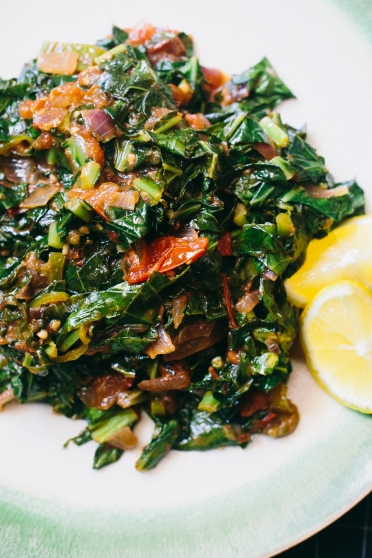

Sukuma Wiki
How to prapare Sukuma Wiki
Ugali, or nsima, is a type of stiff maize flour porridge made in Africa.[1] It is also known as vuswa, bogobe, fufu, gauli, gima, isitshwala, kimnyet, kuon, mieliepap, ngima, nshima, obokima, obuchima, obusuma, oshifima, oruhere, pap, phutu, posho, sadza, ubugali, umutsima, and other names. Nsima is sometimes made from other flours, such as millet or sorghum flour, and is sometimes mixed with cassava flour.[citation needed] It is cooked in boiling water or milk until it reaches a stiff or firm dough-like consistency.In 2017, the dish was added to the UNESCO Representative List of the Intangible Cultural Heritage of Humanity, one of a few foods in the list.
Sukuma Wiki Ingredients
- Maize flour
- Water
Steps
- Heat water in sufuria until it boils
- Once the water is boiling, add flour while stiring